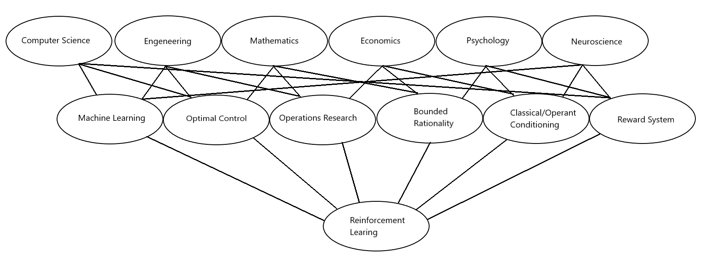
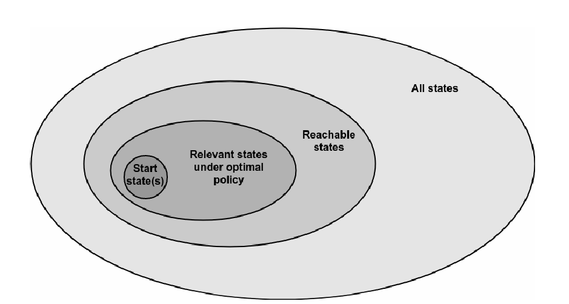
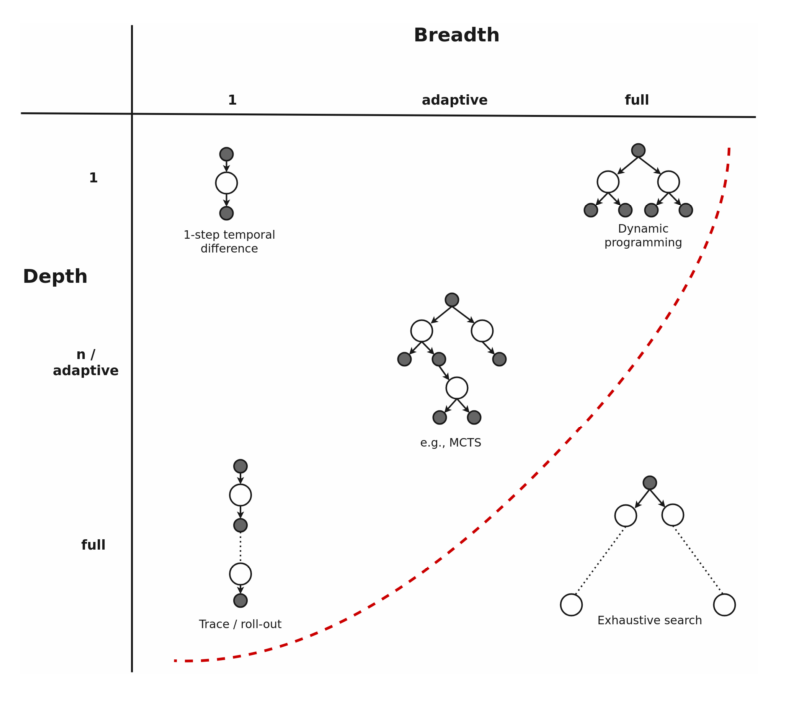

2. Reinforcement Learning¶
Supervised and unsupervised learning are the two most widely studied and researched branches of Machine Learning (ML). Besides these two, there is also a third subcategorie in ML called Reinforcement Learning (RL). The three branches have fundamental differences between eachother. Supervised learning for example is designed to learn from a training set of labeled data, where each element of the training set describes a certain situation and is linked to a label/action the supervisor has provided [Ham18]. RL on the other hand is a method in which the machine tries to map situation to actions by maximizing a reward signal [ADBB17]. The two methods are fundementally different from each other on the fact that in RL there is no supervisor which provides the label/action the machine needs to take, rather there is a reward system set up from which the machine can learn the correct action/label [Ham18]. contrarily to supervised learning, unsupervised learning tries to find hidden structures within an unlabeled dataset. This might seem similar to RL as both methods work with unlabeled datasets, but RL tries to maximize a reward signal instead of finding only hidden structures in the data [ADBB17].
RL finds it roots in multiple research fields. Each of these fields contributes to the RL in its own unique way (see figure) [Ham18]. For example, RL is similar to natural learning processes where the method of learning is by experiencing many failures and successes. Therefore psychologists have used RL to mimic psychological processes when an organism makes choices based on experienced rewards/punishments [EWC21]. While psychologists are mimicing psychological processes, Nueroscientists are using RL to focus on a well-defined network or regions of the brain that implement value learning [EWC21].

2.1. Finite Markov Decision Processes¶
RL can be represented in finite Markov decision processes (MDPs), which are classical formalizations of sequantial decision making. More specifically, MPDs give rise to a structure in which delayed rewards can be balanced with immediate rewards [SB18]. It also enables a straightforward framing of learning from interaction to achieve a goal [Lev18]. In it’s most simplest form RL works with an Agent-Environment Interface. The agent is exposed to some representation of the environment’s state \(S_t \in \mathrm{S}\). From this representation the agent needs to chose an action \( A_t \in \mathcal{A}(s)\), which will result in a numerical reward \(R_{t+1} \in \mathrm{R} \) and a new state \(S_{t+1}\) (see figure 2) [SB18]. The goal for the agent is to learn a mapping from states to action called a policy \(\pi\) that maximizes the expected rewards:
If the MPDs is finite and discrite, the sets of states, actions and rewards (\(S\), \(A\) , and \(R\)) all have a finite number of elements. The agent-environment interaction can then be subdivided into episode [ADBB17]. The agent’s goal is to maximize the expected discounted cumulative return in the episode [FranccoisLHI+18]:
Where T indicates the terminal state and \(\gamma\) is the discount rate. The terminal state \(S_T\) is mostly followed by a reset to a starting state or sample from a starting distribution of states [FranccoisLHI+18]. An episode ends once the reset has occured. The discount rate represents the present value of future rewards. If \(\gamma = 0\), the agent is myopic and is only concerned in maximizing the immediate rewards. The agent can consequently be considerd greedy [SB18].
The returns can be rewritten in a dynammic programming approach:

A key concept of MPDs is the Markov property: Only the current state affects the next state [FranccoisLHI+18]. The random varianbles (RV) \(R_t\) and \(S_t\) have then well defined discrete probability distributions dependend only on the preceding state and action:
For all \(s', s \in \mathrm{S} , r \in \mathrm{R}, a \in \mathrm{A}(s) \). The probability of each element in the sets \(S\) and \(R\) completely chararcterizes the environment [SB18]. This can be relaxed by some alogrithms as this is an unrealistic assumption to make. The Partial Observable Markov Decision Process (POMDP) algorithm for example maintains a belief over the current state given the previous belief state, the action taken and the current observation [ADBB17]. Once \(p\) is known, the environment is fully discribed and functions like a transition function \(T : D \times A \to p(S)\) and a reward function \(R: S \times A \times S \to \R\) can be deducted [SB18].
Most algorithms in RL use a value function to estimate the value of a given state for the agent. Value functions are defined by the policy \(\pi\) the agent has decided to take. As mentioned previously, \(\pi\) is the mapping of states to probabilities of selecting an action. The value function \(v_{\pi}(s)\) in a state \(s\) following a policy \(\pi\) is as followes:
This can aso be rewritten in a dynammic programming approach:
The formula is called the Bellman equation of \(v_{\pi}\). It describes the relationschip between the value of a state and the values of its successor states given a certain policy \(\pi\). The relation can also be represented by a backup diagram (see figure 3). If \(v_{\pi}(s)\) is the value of a given state, then \(q_{\pi}(s,a)\) is the value of a given action of that state:
This can be seen in the backup diagram as starting from the black dot and cumputing the subsequential value thereafter. \(q_{\pi}(s,a)\) is also called the action-value function as it describes each value of an action for each state.

For the agent it is important to find the optimal policy in which it maximizes the expected cumulative rewards. The optimal policy \(\pi_*\) is the policy for which \(v_{\pi_*}(s) > v_{\pi}(s)\) for all \(s \in S\). An optimal policy also has the same action-value function \(q_*(s,a)\) for all \(s \in S\) and \(a \in A\). The optimal policy does not depend soley on one policy and can encompass multiple policy. It is thus not policy dependend: $\( v_*(s) = max_{a \in A(s)} q_{\pi_*}(s,a) \)\( \)\( = max_{a} E_{\pi_*}[G_t | S_t=s, A_t=a] \)\( \)\( = max_{a} E_{\pi_*}[R_{t+1} + \gamma G_{t+1} | S_t=s, A_t=a] \)\( \)\( = max_{a} E[R_{t+1} + \gamma v_*(S_{t+1}) | S_t=s, A_t=a] \)$
Once \(v_*(s)\) is found, you just need to apply a greedy algorithm as the optimal value function already takes into account the long-term consequences of choosing that action. Finding \(q_*(s,a)\) makes things even easier, as the action-value function caches the result of all one-step-ahead searches.
Solving the Bellman equation of the value function or the action-value function such that we know each all possibilities with their probabilities and rewards is in most practical cases not possible. Typical due to three main factors. The first problem is obtaining full knowledge of the dynamics of the environment. The second factor is the computational resources to complete the calculation. the last factor is that the states need to have the markov property. To circumvent these obstacles RL tries to approximate the Bellman optimality equation using various methods. In the next chapter, a brief layout of theser method is discussed with a focus on the methods applicable for financial planning.
2.2. model-based RL, model-free RL and planning¶
A general theory in finding the optimal policy \(\pi_*\) is called Generelized Policy Iteration (GLI). This method is applied to almost all RL algorithms. The main idea behind GLI is that there is a process which evaluates the value function of the current policy \(\pi\) called policy evaluation and a process which improves the current value function called policy improvement. To find the optimal policy these two processes work in tandem with eachother as seen in figure … Counterintuitively, these processes also work in a conflicting manner as policy improvement makes the policy incorrect and it is thus no longer the same policy. While policy evaluations creates a consistent policy and thus the policy no longer improves upon itself. This idea runs in parallel with the balance between exploration and exploitation in RL. If the focus lies more on exploration, the agent frequently tries to find states which improve the value function. However, putting more emphasis on exploration is a costly setting as the agent will more frequenlty choose suboptimal policies to explore the state space. If exploitation is prioritised, the agent will take a long time to find the optimal policy as the agent is likely not to explore new states to improve the policy. is a good example of the influential balance between exploration and exploitation.

Reinforcement Learning can be subdivided between model-based RL and model-free RL. In model-free RL the dynamics of the environment are not known. \(\pi_*\) is found by purily interacting with the environment. Meaning that these algorithms do not use transition probability distribution and reward function related to MDP. Good examples of this are the Q-learning and Policy Optimization algorithms. They tend to be used on a variety of tasks, like playing video games to learning complicated locomotion skills. In purily model-based RL the dynamics of the environment are described by a model. This enables the agent to think in advance and as it were plan for possible actions. A classical example is AlphaGo. The algorithm is the first one to be able to defeated professional players of the board game Go. A hybrid version of the two approaches in which the model is learned through interaction with the environment has also been widely applied. The imagination-augmented agents (12A) for example combines model-based and model-free aspects by employing the predictions as additional context in a deep policy network.

